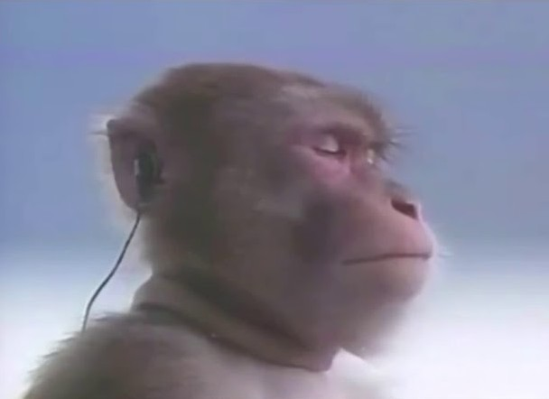

이어폰을 믿기
여기서 끝이 아니다!

자포자기 한채 신품을 사기로 결정한 저는
그래도 미련이 남았는지 마지막으로 음악을 들어보기로 합니다.
“음?”

“어어어???”
세상에,
이어폰이 살아났어요!!!
온갖 건조 행위가 효과가 있었던 걸까요?
출력은 정상적인 쪽과 비슷해졌고
동굴 울림 현상도 없어졌습니다.
물론 원상태 그대로 돌아오지는 않았습니다. 오른쪽만 착용하면 역시 음질에 위화감이 있었습니다.
그치만 뭐 어때요 덕분에 별 시덥잖은 이유로 신품을 살 이유는 없어졌습니다.